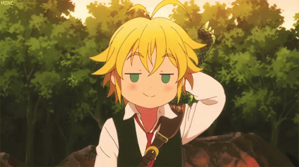

MELIODAS

Meliodas「メリオダス」 is the former captain of the Seven Deadly Sins and the Dragon's Sin of Wrath. He is the owner of the renowned tavern Boar Hat, and the main protagonist of the series. His Sacred Treasure is the Demon Sword Lostvayne and his inherent power is Full Counter. He is also the former leader of the Ten Commandments, a former member of Stigma, and the Demon King's oldest son
Despite having the appearance of a child, Meliodas is actually much older, being over three thousand years old. He is exceptionally short compared to other characters, with messy blond hair and a pair of emerald eyes. He also lacks facial hair, further accentuating his adolescent appearance. Regardless of his stature and youthful looks, he is relatively muscular, possessing an array of well-developed abdominal muscles. He is often shown wearing an ordinary, clean white button-front shirt and a black sleeveless vest on top with a loosely worn tie. His Broken Sword's scabbard is held on by a green leather belt with gold-colored buckles. Without any socks, he wears a pair of black boots. His most distinctive trait is his Dragon symbol carved at the top of his left bicep, just below his shoulder.
During his tenure as the leader of Danafor's Holy Knights, Meliodas wore their traditional armor, much like Cain Barzad's. Ten years ago he wore a full-body silver armor with a unique helmet, like the rest of the Sins. He also wielded a dagger that appeared to be his Sacred Treasure. Meliodas was issued a wanted poster, like all of the Sins were after being framed for the murder of Great Holy Knight Zaratras. The most current issue of his wanted poster does not accurately depict him but, coincidentally, does depict his brother, Estarossa. After the Kingdom Infiltration arc, Meliodas sports a new outfit; a long-sleeved, high-collared white tunic over an undershirt, a pair of gloves, knee-length black pants, and black boots. This outfit is a bit more formal like a uniform with the "Boar Hat" embroidered on his back. After his time in Purgatory, Meliodas now has seven permanent scars where his hearts are located and sports a new Black Mark similar to the one he previously had as leader of the Ten Commandments. He now wears the debut outfit he previously wore.